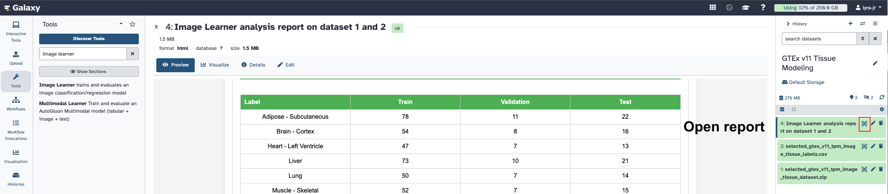
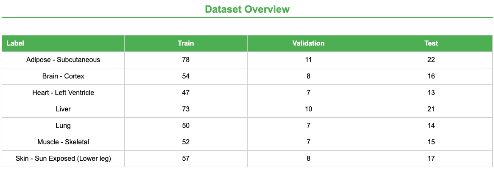
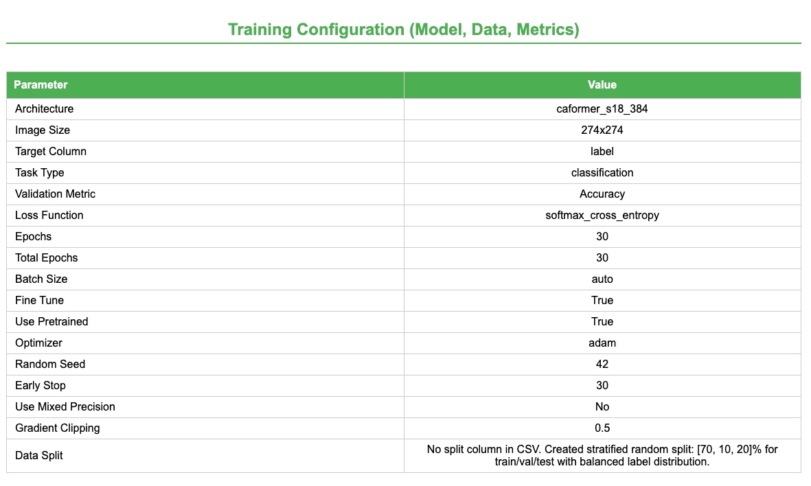
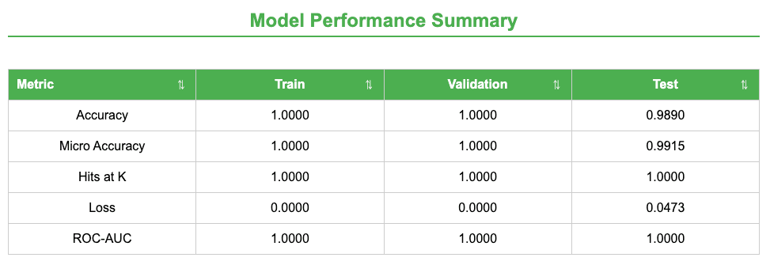
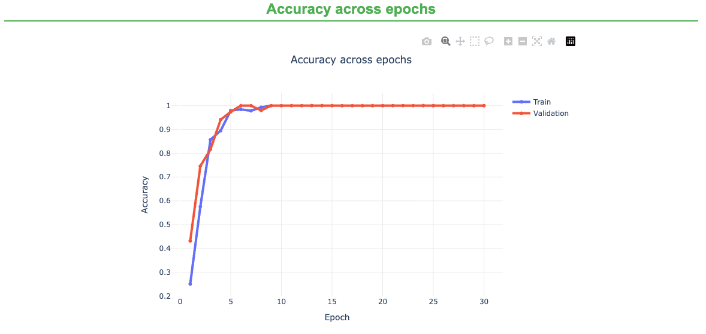
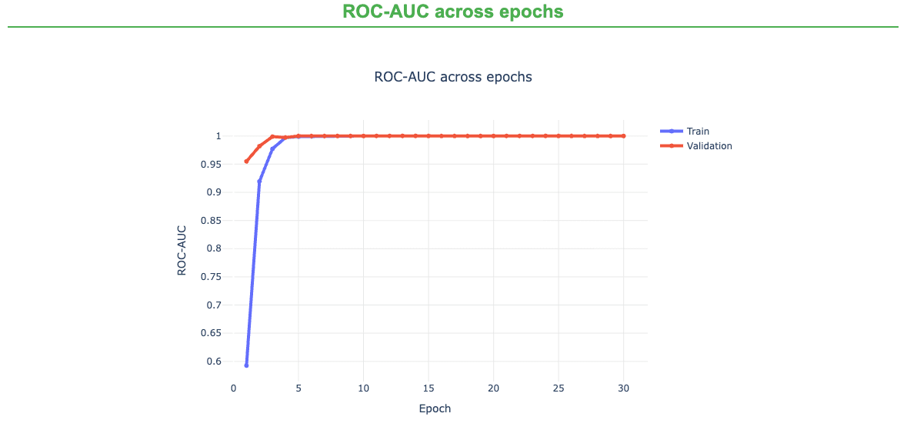
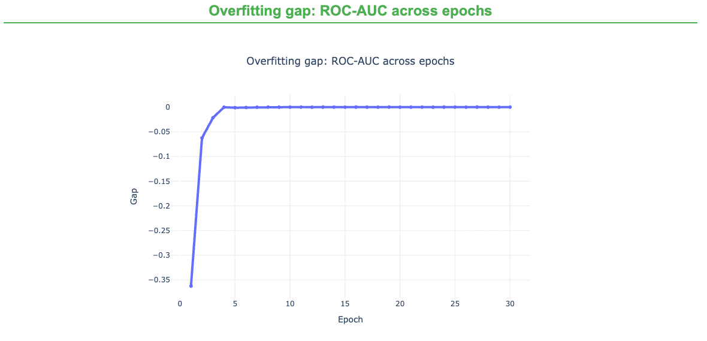
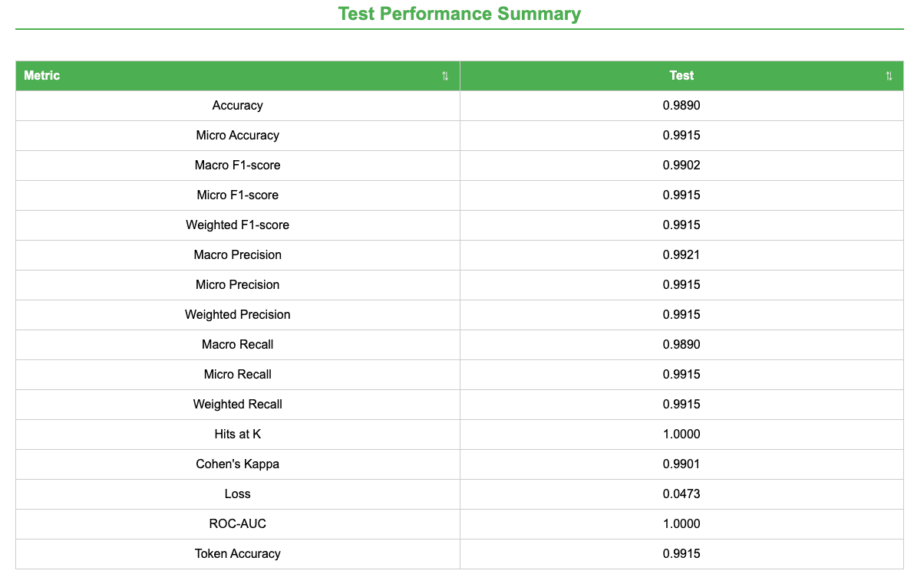
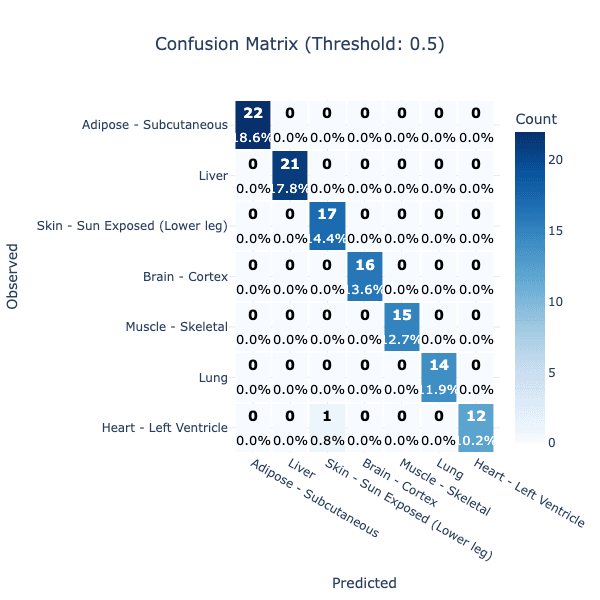
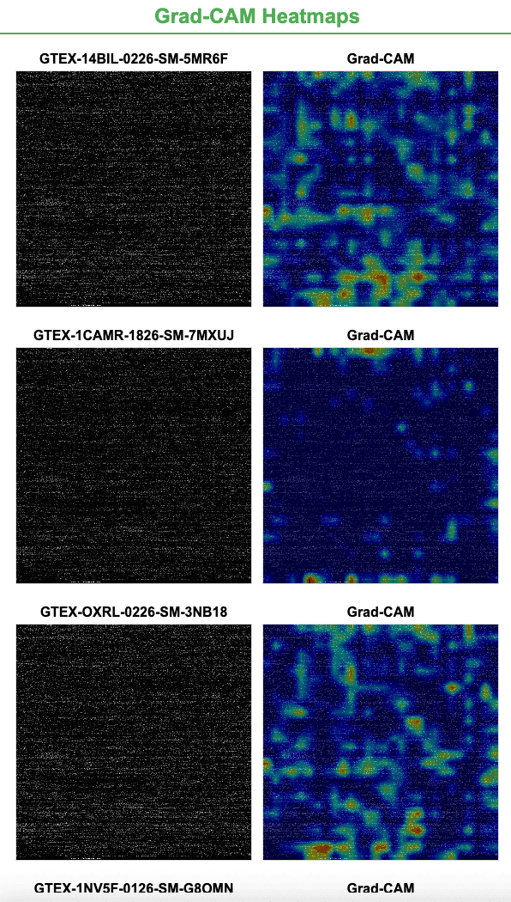

GTEx Tissue Modeling with Galaxy Image Learner
| Author(s) |
|
| Reviewers |
|
OverviewQuestions:
Objectives:
How can GTEx gene expression profiles be transformed into image-like inputs for Image Learner?
How do GTEx sample annotations provide tissue labels for supervised classification?
How can this workflow be run on any Galaxy server with Image Learner installed?
Import a prepared GTEx v11 Image Learner metadata table and image ZIP archive.
Optionally rebuild the prepared files from GTEx v11 gene TPM and sample annotation files.
Train and evaluate a multi-class tissue classifier in Galaxy.
Time estimation: 1 hourLevel: Intermediate IntermediateSupporting Materials:Published: Jul 24, 2026Last modification: Jul 24, 2026License: Tutorial Content is licensed under Creative Commons Attribution 4.0 International License. The GTN Framework is licensed under MITpurl PURL: https://gxy.io/GTN:T00588version Revision: 1
Convolutional neural networks can learn hierarchical features directly from image pixels, making them powerful tools for image classification. This capability has motivated researchers to encode genomic and other non-image data as image-like representations that can be analyzed with image-based deep learning models Sharma et al. 2019 Zhang et al. 2024. In particular, RNA-seq gene expression profiles have been transformed into two-dimensional images and classified by fine-tuning pretrained convolutional neural networks Alharbi et al. 2020. Galaxy’s Image Learner makes this general strategy accessible through a web interface in which users provide images, labels, and training settings.
In this tutorial, we apply that strategy to GTEx gene expression data, which are normally represented as tables containing thousands of gene-level TPM values for each sample. We log-transform each sample’s expression vector, place the values into a fixed-order square array, save the array as a grayscale image, and train Image Learner to predict the tissue of origin. This simple transformation is intended as a teaching example: unlike methods that arrange related features near one another Sharma et al. 2019, the spatial relationships in these images are determined by gene order and should not be interpreted as biological proximity.
The main tutorial uses prepared files from Zenodo so that you can focus on configuring Image Learner, training the tissue classifier, and interpreting its outputs. An optional section explains how to generate the images and labels from the raw GTEx v11 files, allowing you to rebuild the dataset, select different tissues, change the number of samples per tissue, or explore alternative preprocessing choices.
AgendaIn this tutorial, we will cover:
GTEx Dataset
Comment: BackgroundGTEx is a large reference resource for studying human gene expression across tissues GTEx Consortium 2020. The modeling idea used here treats each sample’s vector of gene TPM values as a structured image: values are log-transformed, padded to a square, and saved as a grayscale image. A tissue classifier can then learn tissue-specific expression patterns using Galaxy Image Learner.
The raw data used to create this tutorial dataset were downloaded from the GTEx Portal. The GTEx Portal provides multiple GTEx releases and many file types, including expression matrices, metadata, eQTL files, histology resources, and other analysis outputs. For this image-classification workflow, we need two specific pieces of information:
- A gene-level expression matrix, so each sample can be represented by a vector of expression values.
- Sample metadata, so each sample can be assigned a tissue label for supervised learning.
The GTEx v11 gene TPM file and v11 sample attributes file provide exactly those inputs. TPM values are normalized expression measurements that are appropriate for comparing gene expression profiles across samples in this tutorial context. The sample attributes file links each sample ID to tissue metadata, including the detailed tissue label (SMTSD) used as the class label.
| File | Direct URL | Use |
|---|---|---|
GTEx_Analysis_2025-08-22_v11_RNASeQCv2.4.3_gene_tpm.gct.gz |
GTEx v11 gene TPM GCT | Gene TPM matrix |
GTEx_Analysis_v11_Annotations_SampleAttributesDS.txt |
GTEx v11 sample attributes | Sample labels and QC metadata |
The raw GCT expression matrix has genes as rows and samples as columns. The sample attributes file includes:
| Column | Meaning |
|---|---|
SAMPID |
GTEx sample identifier. This must match expression matrix sample columns. |
SMTS |
Broad tissue category. |
SMTSD |
Detailed tissue label used as the classification target in this tutorial. |
The raw expression matrix is large: it contains many genes and many GTEx samples, so loading the full table into memory can be expensive. Each sample column contains the expression profile for one biospecimen. Each row corresponds to a gene, and the values summarize RNA-seq abundance as TPM. The annotation table contains technical and biological metadata for the samples, including identifiers, tissue categories, and quality-related fields.
This structure makes GTEx useful for many machine learning tasks. In this tutorial, the task is tissue classification: given the expression pattern of a sample, can a model identify the tissue it came from? Because different tissues express different sets of genes at different levels, GTEx provides a strong biological signal for this type of classification problem.
GTEx dataset transformation
We will train the model with Image Learner, a Galaxy tool available on Galaxy servers such as usegalaxy.org when the tool is installed. Image Learner expects image-based training data in a specific format:
- A metadata table with one row per image.
- An
image_pathcolumn that names the image file inside the ZIP archive. - A
labelcolumn that contains the class to predict. - A ZIP archive containing all image files referenced by the metadata table.
To convert tabular gene expression data into images, we treat each sample’s gene expression values as a long list of numbers. First, the values are log-transformed to reduce the effect of very large expression values. Then the vector is padded with zeros until it can fill a square. Finally, the square array is saved as a grayscale image, where darker and lighter pixels represent lower and higher transformed expression values. The image is not a photograph or a biological tissue picture; it is a structured representation of the sample’s expression profile that an image model can process.
We have already made the generated Image Learner inputs available on Zenodo, and those prepared files are the recommended starting point for this tutorial. However, you can also generate the files inside Galaxy with the JupyterLab Interactive Tool, or run the same script locally if your computer has Python, the required Python packages, enough memory to process the GTEx expression matrix, and enough disk space for the downloaded GTEx files and generated images. By changing parameters such as
SELECTED_TISSUESandSAMPLES_PER_TISSUE, you can create different tissue-classification tasks and test how the model behaves.Hands On: Optional: Generate GTEx expression images in Galaxy JupyterLab
Create or switch to the Galaxy history where you want the rebuilt files to appear.
In the Galaxy tool panel, open Interactive Tools and select JupyterLab Notebook.
Use the default JupyterLab environment. Click Run Tool to start the JupyterLab Interactive Tool.
The JupyterLab job will appear in your Galaxy history. Wait until it is running, then open it from the history dataset or from User > Active Interactive Tools.
In JupyterLab, open a terminal with Others > Terminal.
Check that the Python packages needed by the script are available:
python -c "import numpy, pandas, matplotlib, psutil; print('Python environment is ready')"If this command reports a missing package, install the missing dependencies in the JupyterLab environment:
python -m pip install --user numpy pandas matplotlib psutilDownload the GTEx v11 expression matrix and sample annotation file directly from the GTEx links:
curl -L -o GTEx_Analysis_2025-08-22_v11_RNASeQCv2.4.3_gene_tpm.gct.gz https://storage.googleapis.com/adult-gtex/bulk-gex/v11/rna-seq/GTEx_Analysis_2025-08-22_v11_RNASeQCv2.4.3_gene_tpm.gct.gz curl -L -o GTEx_Analysis_v11_Annotations_SampleAttributesDS.txt https://storage.googleapis.com/adult-gtex/annotations/v11/metadata-files/GTEx_Analysis_v11_Annotations_SampleAttributesDS.txtCreate the Python script in JupyterLab:
- Click File > New > Python File.
- Paste the script below into the editor.
- Save the file, then rename it in the JupyterLab file browser to
gtex_v11_to_images_adaptive.py.- Keep it in the same folder as the two downloaded GTEx files.
Before running the script, edit the variables near the top if you want to change the dataset:
SELECTED_TISSUES: choose which GTEx tissue labels to model. The names must matchSMTSDvalues in the GTEx annotation file.SAMPLES_PER_TISSUE: choose how many samples to use per tissue. Use a small value first if the Galaxy server has limited memory.RANDOM_SEED: keep this fixed for reproducible sampling, or change it to select a different random subset.NORMALIZATION_METHOD: uselogfor the recommended default, or testminmax,zscore, ornone.LUDWIG_OUTPUTandZIP_OUTPUT: change these only if you want different output filenames.
SELECTED_TISSUESandSAMPLES_PER_TISSUEare intentionally explicit. Start with a small balanced task so the tutorial runs quickly, then expand the tissue list or increase the sample count once the workflow is working on your Galaxy server.# gtex_v11_to_images_adaptive.py # # Memory-adaptive GTEx V11 image pipeline for Galaxy JupyterLab. # # What this script does: # 1. Checks available CPU and RAM. # 2. Chooses safer/faster settings based on the computer. # 3. Loads GTEx annotation metadata. # 4. Selects samples from selected tissues. # 5. Reads the large TPM matrix in chunks. # 6. Creates one grayscale JPG image per sample. # 7. Creates ludwig_input.csv. # 8. Zips all images for Galaxy upload. import math import os import zipfile from pathlib import Path import matplotlib import numpy as np import pandas as pd matplotlib.use("Agg") from matplotlib import pyplot as plt TPM_FILE = "GTEx_Analysis_2025-08-22_v11_RNASeQCv2.4.3_gene_tpm.gct.gz" ANNOTATION_FILE = "GTEx_Analysis_v11_Annotations_SampleAttributesDS.txt" SELECTED_TISSUES = [ "Brain - Cortex", "Heart - Left Ventricle", "Liver", "Lung", "Muscle - Skeletal", "Adipose - Subcutaneous", "Skin - Sun Exposed (Lower leg)", ] SAMPLES_PER_TISSUE = 200 RANDOM_SEED = 42 NORMALIZATION_METHOD = "log" IMAGE_DIR = "output_images" METADATA_OUTPUT = "metadata_base.csv" LUDWIG_OUTPUT = "ludwig_input.csv" ZIP_OUTPUT = "output_images.zip" def get_available_ram_gb(): try: import psutil return psutil.virtual_memory().available / (1024 ** 3) except ImportError: print("psutil is not installed. Using conservative memory settings.") return 4.0 def get_cpu_count(): return os.cpu_count() or 1 def choose_runtime_settings(): ram_gb = get_available_ram_gb() cpu_count = get_cpu_count() if ram_gb >= 32: profile = "high-resource" chunksize = 5000 elif ram_gb >= 16: profile = "medium-resource" chunksize = 2500 elif ram_gb >= 8: profile = "low-resource" chunksize = 1000 else: profile = "very-low-resource" chunksize = 250 print("Computer resource profile:") print(f" Available RAM: {ram_gb:.2f} GB") print(f" CPU cores: {cpu_count}") print(f" Selected profile: {profile}") print(f" TPM read chunksize: {chunksize}") return {"ram_gb": ram_gb, "cpu_count": cpu_count, "profile": profile, "chunksize": chunksize} def load_and_select_metadata(): print("Loading annotation file...") annot = pd.read_csv(ANNOTATION_FILE, sep="\t") required = {"SAMPID", "SMTSD"} missing = required - set(annot.columns) if missing: raise ValueError(f"Missing required annotation columns: {missing}") annot = annot[annot["SMTSD"].isin(SELECTED_TISSUES)].copy() annot = annot.drop_duplicates(subset=["SAMPID"]) selected = [] for tissue, group in annot.groupby("SMTSD"): n = min(SAMPLES_PER_TISSUE, len(group)) selected.append(group.sample(n=n, random_state=RANDOM_SEED)) if not selected: raise ValueError("No samples found for SELECTED_TISSUES.") meta = pd.concat(selected).reset_index(drop=True) labels = meta[["SAMPID", "SMTSD"]].rename(columns={"SAMPID": "sample_id", "SMTSD": "label"}) labels.to_csv(METADATA_OUTPUT, index=False) print("Selected samples per tissue:") print(labels["label"].value_counts().sort_index()) return labels def get_available_selected_samples(selected_sample_ids): print("Reading GCT header...") header = pd.read_csv(TPM_FILE, sep="\t", skiprows=2, nrows=0, compression="gzip") available_samples = [sample_id for sample_id in selected_sample_ids if sample_id in header.columns] missing = sorted(set(selected_sample_ids) - set(available_samples)) if missing: print(f"Warning: {len(missing)} selected samples were not found in TPM matrix.") if not available_samples: raise ValueError("None of the selected samples were found in the TPM matrix.") print(f"Samples found in TPM matrix: {len(available_samples)}") return available_samples def read_selected_expression(sample_ids, chunksize): print("Reading selected TPM expression values in chunks...") sample_vectors = {sample_id: [] for sample_id in sample_ids} total_genes = 0 usecols = ["Name"] + sample_ids reader = pd.read_csv( TPM_FILE, sep="\t", skiprows=2, compression="gzip", usecols=usecols, chunksize=chunksize, ) for chunk_index, chunk in enumerate(reader, start=1): chunk_values = chunk[sample_ids].astype(np.float32) for sample_id in sample_ids: sample_vectors[sample_id].extend(chunk_values[sample_id].to_numpy()) total_genes += len(chunk) if chunk_index % 10 == 0: print(f"Processed {total_genes} genes...") print(f"Finished reading {total_genes} genes.") return sample_vectors, total_genes def normalize_values(values, method): values = np.asarray(values, dtype=np.float32) if method == "log": return np.log1p(values) if method == "minmax": return (values - np.min(values)) / (np.max(values) - np.min(values) + 1e-8) if method == "zscore": return (values - np.mean(values)) / (np.std(values) + 1e-8) if method == "none": return values raise ValueError(f"Unknown normalization method: {method}") def vector_to_image(values, total_genes): values = normalize_values(values, NORMALIZATION_METHOD) image_size = math.ceil(math.sqrt(total_genes)) padded = np.zeros(image_size * image_size, dtype=np.float32) padded[:total_genes] = values return padded.reshape((image_size, image_size)) def save_images(sample_vectors, total_genes): Path(IMAGE_DIR).mkdir(parents=True, exist_ok=True) total_samples = len(sample_vectors) for i, (sample_id, values) in enumerate(sample_vectors.items(), start=1): image = vector_to_image(values, total_genes) output_path = Path(IMAGE_DIR) / f"{sample_id}.jpg" plt.imsave(output_path, image, cmap="gray", format="jpg") plt.close("all") if i % 50 == 0 or i == total_samples: print(f"Saved {i}/{total_samples} images.") def create_ludwig_csv(labels, available_samples): labels = labels[labels["sample_id"].isin(available_samples)].copy() labels["image_path"] = labels["sample_id"] + ".jpg" labels[["image_path", "label"]].to_csv(LUDWIG_OUTPUT, index=False) print(f"Created {LUDWIG_OUTPUT}") def zip_images(): jpg_files = sorted(filename for filename in os.listdir(IMAGE_DIR) if filename.endswith(".jpg")) if not jpg_files: raise ValueError(f"No JPG images found in {IMAGE_DIR}") with zipfile.ZipFile(ZIP_OUTPUT, "w", compression=zipfile.ZIP_DEFLATED) as handle: for filename in jpg_files: handle.write(Path(IMAGE_DIR) / filename, arcname=filename) print(f"Created {ZIP_OUTPUT}") def main(): settings = choose_runtime_settings() labels = load_and_select_metadata() selected_sample_ids = labels["sample_id"].tolist() available_samples = get_available_selected_samples(selected_sample_ids) labels = labels[labels["sample_id"].isin(available_samples)].copy() sample_vectors, total_genes = read_selected_expression( sample_ids=available_samples, chunksize=settings["chunksize"], ) save_images(sample_vectors=sample_vectors, total_genes=total_genes) create_ludwig_csv(labels=labels, available_samples=available_samples) zip_images() print("Done.") print(f"Images folder: {IMAGE_DIR}") print(f"Ludwig CSV: {LUDWIG_OUTPUT}") print(f"Images ZIP: {ZIP_OUTPUT}") if __name__ == "__main__": main()Run the script in the JupyterLab terminal.
python gtex_v11_to_images_adaptive.pyThe script prints the detected memory profile, selected samples per tissue, progress while reading the TPM matrix, and progress while saving images.
Confirm that the expected output files were created:
ls -lh metadata_base.csv ludwig_input.csv output_images.zipThe script creates:
metadata_base.csv: selected sample IDs and labelsludwig_input.csv: Image Learner metadata table withimage_pathandlabeloutput_images.zip: grayscale expression image ZIP archive
- Push the two Image Learner inputs back to your Galaxy history.
Open the Python notebook in JupyterLab by double-clicking the file named
ipython_galaxy_notebook.ipynb, or open a new one with File > New > Notebook. Choose the Python kernel, then run the following commands. Theput()function is available in Galaxy JupyterLab and exports files from the JupyterLab workspace into the Galaxy history. Copy and paste the following commands into a Jupyter notebook cell:put("ludwig_input.csv") put("output_images.zip")Look for the play icon at the top of the window and click it to execute the commands. The files will appear as new datasets in the Galaxy history that launched JupyterLab. Wait for both datasets to turn green before using them in Image Learner.
- Return to Galaxy and use
ludwig_input.csvas the metadata table andoutput_images.zipas the image ZIP.
Workflow
Overview
The hands-on workflow uses the following steps:
- Import the previously prepared metadata CSV and image ZIP from Zenodo.
- Configure Image Learner with
labelas the target column andimage_pathas the image column. - Configure the hyperparameters.
- Run the tool to train Image Learner to predict tissue label from the generated expression image.
- Review the model report, test metrics, and confusion matrix.
The tutorial is written for any Galaxy instance that has Image Learner installed, or where an administrator can install Image Learner from the ToolShed.
Environment and Data Upload
Image Learner expects, by default, a metadata table and an image ZIP archive. The metadata table must include one row per image and at least two columns:
Column Description image_pathImage filename inside the ZIP archive. labelTissue label, derived from SMTSD.The prepared Zenodo metadata CSV already contains these columns.
Hands On: Environment and Data Upload
Create a new history for this tutorial. If you are not inspired, you can name it GTEx v11 Tissue Modeling.
To create a new history simply click the new-history icon at the top of the history panel:
Import the prepared files from Zenodo or from the shared data library:
https://zenodo.org/records/19963477/files/selected_gtex_v11_tpm_image_tissue_labels.csv https://zenodo.org/records/19963477/files/selected_gtex_v11_tpm_image_tissue_dataset.zipLeave the
Typefield asAuto-Detectwhen uploading the metadata CSV. For the image archive, set or confirm the datatype aszip.
- Copy the link location
Click galaxy-upload Upload at the top of the activity panel
- Select galaxy-wf-edit Paste/Fetch Data
Paste the link(s) into the text field
Press Start
- Close the window
Check that the data formats are assigned correctly:
selected_gtex_v11_tpm_image_tissue_labels.csv:csvortabularselected_gtex_v11_tpm_image_tissue_dataset.zip:zipIf they are not, follow the Changing the datatype tip.
- Click on the galaxy-pencil pencil icon for the dataset to edit its attributes
- In the central panel, click galaxy-chart-select-data Datatypes tab on the top
- In the galaxy-chart-select-data Assign Datatype, select
datatypesfrom “New Type” dropdown
- Tip: you can start typing the datatype into the field to filter the dropdown menu
- Click the Save button
Add a tag (
GTEx v11 tissue model dataset) to both datasets. This is important to trace back which dataset the model was built on.Datasets can be tagged. This simplifies the tracking of datasets across the Galaxy interface. Tags can contain any combination of letters or numbers but cannot contain spaces.
To tag a dataset:
- Click on the dataset to expand it
- Click on Add Tags galaxy-tags
- Add tag text. Tags starting with
#will be automatically propagated to the outputs of tools using this dataset (see below).- Press Enter
- Check that the tag appears below the dataset name
Tags beginning with
#are special!They are called Name tags. The unique feature of these tags is that they propagate: if a dataset is labelled with a name tag, all derivatives (children) of this dataset will automatically inherit this tag (see below). The figure below explains why this is so useful. Consider the following analysis (numbers in parenthesis correspond to dataset numbers in the figure below):
- a set of forward and reverse reads (datasets 1 and 2) is mapped against a reference using Bowtie2 generating dataset 3;
- dataset 3 is used to calculate read coverage using BedTools Genome Coverage separately for
+and-strands. This generates two datasets (4 and 5 for plus and minus, respectively);- datasets 4 and 5 are used as inputs to Macs2 broadCall datasets generating datasets 6 and 8;
- datasets 6 and 8 are intersected with coordinates of genes (dataset 9) using BedTools Intersect generating datasets 10 and 11.
Now consider that this analysis is done without name tags. This is shown on the left side of the figure. It is hard to trace which datasets contain “plus” data versus “minus” data. For example, does dataset 10 contain “plus” data or “minus” data? Probably “minus” but are you sure? In the case of a small history like the one shown here, it is possible to trace this manually but as the size of a history grows it will become very challenging.
The right side of the figure shows exactly the same analysis, but using name tags. When the analysis was conducted datasets 4 and 5 were tagged with
#plusand#minus, respectively. When they were used as inputs to Macs2 resulting datasets 6 and 8 automatically inherited them and so on… As a result it is straightforward to trace both branches (plus and minus) of this analysis.More information is in a dedicated #nametag tutorial.


If you ran the optional script, upload
ludwig_input.csvandoutput_images.zipinstead of the Zenodo files. The Image Learner settings are the same: label columnc2: labeland image columnc1: image_path.
Train the Tissue Classifier
Hands On: Run Image Learner
Image Learner ( Galaxy version 0.1.5) with the following parameters:
- param-file The metadata csv containing image_path column, label column:
selected_gtex_v11_tpm_image_tissue_labels.csv- param-file Image zip:
selected_gtex_v11_tpm_image_tissue_dataset.zip- param-select Task Type:
Multi-class Classification- param-select Select a model for your experiment:
CAFormer S18 384- param-select Customize Default Settings:
Yes- param-text Epochs:
30- param-text Early Stop:
30Execute the tool.
Parameter Value Rationale Task type Multi-class classification Each image belongs to one GTEx tissue label. Label column labelDerived from SMTSDin GTEx sample attributes.Image column image_pathFilename inside the image ZIP archive. Model CAFormer S18 384Strong general-purpose image backbone available in Image Learner. Epochs 30Maximum number of training passes over the dataset. More epochs can improve learning, but too many can overfit. Early Stop 30Stop training if the validation metric does not improve for this many epochs. This helps avoid wasting time and can reduce overfitting.
Interpret the Outputs
Image Learner creates an interactive report with three tabs. Read them from left to right: first check the data and settings, then examine how the model learned, and finally evaluate it on the test set.
Keep three questions in mind:
- Do the training and validation curves follow a similar pattern?
- Does performance remain high on data that were not used for training?
- Which tissue classes are confused with one another?
To open the report, click the eye icon next to the report dataset in your Galaxy history.

Config and Overall Performance Summary
Start with the Config and Overall Performance Summary tab. It contains the dataset split, training settings, and a first comparison of training, validation, and test performance. The figures below show selected parts of this tab; scroll through the report to inspect the complete configuration.
Dataset Overview

The samples were divided into training, validation, and test sets using a stratified 70/10/20 split. Stratification preserves similar tissue proportions in each set. Some tissues have more samples than others, so per-class results remain important.
Training Configuration

The configuration records the settings needed to understand and reproduce the run. Here, Image Learner fine-tunes a pretrained CAFormer model for 30 epochs using Adam. Accuracy is the validation metric used to monitor the model, while cross-entropy loss guides updates to its weights.
For this tutorial, both Epochs and Early Stop are set to 30 so that training can continue for the full 30 epochs. Although performance reaches its maximum early, the additional epochs make the later plateau visible in the learning curves. In future experiments, use Epochs to set the maximum training length and lower Early Stop to end training sooner when the validation metric stops improving.
Overall Performance Overview
The summary uses several metrics. Accuracy is the proportion of samples assigned the correct tissue. Micro accuracy combines results across all classes, so larger classes contribute more. Hits at K checks whether the correct tissue is among the top K predictions; here, the default is K = 3. Loss measures prediction error, and ROC-AUC measures how well the model separates the classes.

What do the results show?
- Training and validation scores are perfect to the displayed precision.
- Test accuracy remains high at 0.9890, with a small loss of 0.0473.
- Test Hits at K and ROC-AUC are 1.0000, indicating strong top-three predictions and class separation.
The test set provides the most useful estimate of performance on unseen samples. These results are excellent for this dataset, but an external dataset is still needed to test broader generalization.
Training and Validation Results
Next, open the Training and Validation Results tab. An epoch is one complete pass through the training data. This tab shows how loss, accuracy, and ROC-AUC change across epochs, compares training with validation, and reports the best validation epoch. Hover over the report’s interactive plots to see exact values.
Accuracy Across Epochs

Training and validation accuracy rise quickly and reach 1.0 within the first ten epochs. The curves remain close, showing that performance improves similarly on data used to fit the model and data used to monitor it. A growing gap or falling validation accuracy would instead suggest overfitting.
ROC-AUC Across Epochs

ROC-AUC approaches 1.0 within the first few epochs and then remains stable for both splits. This indicates that the model learns to separate the tissue classes early in training.
Overfitting Gap

This plot shows the difference between training and validation ROC-AUC. The gap quickly approaches zero and stays there, so the two curves agree closely. There is no widening gap in this metric during training.
Test Results
Finally, open the Test Results tab. The test set was not used to fit the model and therefore provides the clearest check of final performance. The tab includes overall and per-class metrics, a confusion matrix, prediction confidence, and Grad-CAM heatmaps. The tutorial shows selected outputs; explore the full tab for class-level details.

How to read the metrics:
- Accuracy: proportion of correct predictions.
- Precision: proportion of predictions for a tissue that are correct.
- Recall: proportion of samples from a tissue that are identified correctly.
- F1-score: balance between precision and recall.
- Macro / micro / weighted: treat classes equally / combine all predictions / account for class size.
- Hits at K / ROC-AUC: whether the correct label is in the top three / how well classes are separated.
Key observations:
- All precision, recall, and F1-scores are at least 0.9890, indicating very few classification errors.
- Micro and weighted scores are 0.9915; these summarize all samples or account for class size.
- Macro scores are slightly lower because they give every tissue equal weight, making errors in smaller classes more visible.
- Hits at K and ROC-AUC are 1.0000, showing that the correct tissue is always among the top three predictions and that the classes are well separated.

- Rows are observed tissues and columns are predicted tissues; correct predictions fall on the diagonal.
- The only visible error is one Heart - Left Ventricle sample predicted as Skin - Sun Exposed (Lower leg).
- All other tissue classes are classified correctly in this test set.
Grad-CAM Heatmaps

Grad-CAM highlights regions that influenced a prediction: warmer colors indicate greater influence. The heatmaps show that the model focuses on selected regions rather than using every pixel equally.
These are expression-derived images, not photographs or spatial tissue maps. Pixel positions follow gene order, so nearby highlighted pixels are not necessarily biologically related. Grad-CAM shows where the model focused, but it does not identify causal genes. Mapping highlighted pixels back to genes would be a separate follow-up analysis.
Summary
Overall, the model demonstrates excellent performance, achieving near-perfect results on both training and validation datasets and maintaining very high accuracy and ROC-AUC on the test set. This suggests that the model has learned strong and meaningful patterns from the data and is able to generalize well to unseen samples.
However, the near-perfect scores—especially on training and validation—should be interpreted with caution. They may indicate that:
- The dataset is highly clean and well-separated, or
- The model may be slightly overfitting, particularly if the dataset is small or lacks diversity
By examining the detailed metrics, training curves, and Grad-CAM visualizations, we can confirm whether the model is:
- Learning relevant features
- Generalizing appropriately
- Reliable for downstream analysis
In this case, the results suggest a high-performing model with strong predictive capability, but further validation on additional or more diverse data may still be beneficial to ensure robustness.
Limitations
This workflow is designed as a teaching example and a convenient Image Learner benchmark. It does not imply that gene expression profiles are inherently image-like data.
The transformation from expression vectors to images depends on gene ordering, meaning spatial relationships in the images are engineered rather than biologically meaningful. As a result, model performance reflects the ability to learn patterns in this representation, not necessarily true spatial biological structure.
Additionally, the near-perfect performance observed in this tutorial may be influenced by dataset characteristics such as class separability or limited variability. For research applications, results should be validated using additional datasets, alternative representations, and appropriate statistical controls.
Conclusion
In this tutorial, you used prepared GTEx v11 expression-derived images and metadata to train a Galaxy Image Learner model for tissue classification. The model achieved strong performance across training, validation, and test datasets, demonstrating that tissue-specific expression patterns can be effectively learned using this image-based representation.
At the same time, the near-perfect evaluation metrics highlight the importance of careful interpretation and validation. While the results suggest strong predictive capability, additional testing on more diverse datasets would help confirm robustness and real-world applicability.
Overall, this workflow demonstrates how high-dimensional biological data can be transformed and modeled using deep learning tools in Galaxy, providing both a practical pipeline and a foundation for further experimentation.
You've Finished the Tutorial
Key points
GTEx v11 gene TPM profiles can be represented as fixed-size grayscale images, one image per sample.
SMTSDfrom the GTEx sample attributes file is used as the tissue label.This tutorial can be run on any Galaxy instance where Image Learner is available or installable.
Frequently Asked Questions
Have questions about this tutorial? Have a look at the available FAQ pages and support channelsReferences
- Sharma, A., E. Vans, D. Shigemizu, K. A. Boroevich, and T. Tsunoda, 2019 DeepInsight: A methodology to transform a non-image data to an image for convolution neural network architecture. Scientific Reports 9: 11399. 10.1038/s41598-019-47765-6
- Alharbi, F., M. K. Elbashir, M. Mohammed, and M. E. Mustafa, 2020 Fine-Tuning Pre-Trained Convolutional Neural Networks for Women Common Cancer Classification using RNA-Seq Gene Expression. International Journal of Advanced Computer Science and Applications 11: 676–683. 10.14569/IJACSA.2020.0111182
- GTEx Consortium, 2020 The GTEx Consortium atlas of genetic regulatory effects across human tissues. Science 369: 10.1126/science.aaz1776
- Zhang, K., N. R. Zemke, E. J. Armand, and B. Ren, 2024 A fast, scalable and versatile tool for analysis of single-cell omics data. Nature Methods 21: 217–227. 10.1038/s41592-023-02139-9
Feedback
Did you use this material as an instructor? Feel free to give us feedback on how it went.
Did you use this material as a learner or student? Click the form below to leave feedback.

Citing this Tutorial
- Paulo Cilas Morais Lyra Junior, Allissa Dillman, Natalie Kucher, Alyssa Pybus, Junhao Qiu, Jeremy Goecks, GTEx Tissue Modeling with Galaxy Image Learner (Galaxy Training Materials). https://training.galaxyproject.org/training-material/topics/statistics/tutorials/GTEx_Tissue_modeling/tutorial.html Online; accessed TODAY
- Hiltemann, Saskia, Rasche, Helena et al., 2023 Galaxy Training: A Powerful Framework for Teaching! PLOS Computational Biology 10.1371/journal.pcbi.1010752
- Batut et al., 2018 Community-Driven Data Analysis Training for Biology Cell Systems 10.1016/j.cels.2018.05.012
Congratulations on successfully completing this tutorial!@misc{statistics-GTEx_Tissue_modeling, author = "Paulo Cilas Morais Lyra Junior and Allissa Dillman and Natalie Kucher and Alyssa Pybus and Junhao Qiu and Jeremy Goecks", title = "GTEx Tissue Modeling with Galaxy Image Learner (Galaxy Training Materials)", year = "", month = "", day = "", url = "\url{https://training.galaxyproject.org/training-material/topics/statistics/tutorials/GTEx_Tissue_modeling/tutorial.html}", note = "[Online; accessed TODAY]" } @article{Hiltemann_2023, doi = {10.1371/journal.pcbi.1010752}, url = {https://doi.org/10.1371%2Fjournal.pcbi.1010752}, year = 2023, month = {jan}, publisher = {Public Library of Science ({PLoS})}, volume = {19}, number = {1}, pages = {e1010752}, author = {Saskia Hiltemann and Helena Rasche and Simon Gladman and Hans-Rudolf Hotz and Delphine Larivi{\`{e}}re and Daniel Blankenberg and Pratik D. Jagtap and Thomas Wollmann and Anthony Bretaudeau and Nadia Gou{\'{e}} and Timothy J. Griffin and Coline Royaux and Yvan Le Bras and Subina Mehta and Anna Syme and Frederik Coppens and Bert Droesbeke and Nicola Soranzo and Wendi Bacon and Fotis Psomopoulos and Crist{\'{o}}bal Gallardo-Alba and John Davis and Melanie Christine Föll and Matthias Fahrner and Maria A. Doyle and Beatriz Serrano-Solano and Anne Claire Fouilloux and Peter van Heusden and Wolfgang Maier and Dave Clements and Florian Heyl and Björn Grüning and B{\'{e}}r{\'{e}}nice Batut and}, editor = {Francis Ouellette}, title = {Galaxy Training: A powerful framework for teaching!}, journal = {PLoS Comput Biol} }
You can use Ephemeris's
shed-tools installcommand to install the tools used in this tutorial.shed-tools install [-g GALAXY] [-a API_KEY] -t <(curl https://training.galaxyproject.org/training-material/api/topics/statistics/tutorials/GTEx_Tissue_modeling/tutorial.json | jq .admin_install_yaml -r)Alternatively you can copy and paste the following YAML
--- install_tool_dependencies: true install_repository_dependencies: true install_resolver_dependencies: true tools: - name: image_learner owner: goeckslab revisions: 328ff3a13078 tool_panel_section_label: Machine Learning tool_shed_url: https://toolshed.g2.bx.psu.edu/